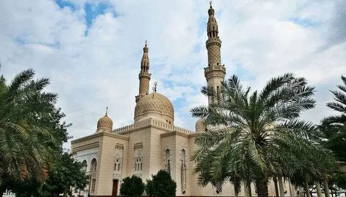
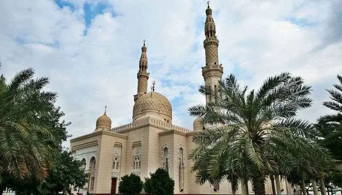

Dubai’s phenomenal rise from a simple fishing community to a distinguished global metropolis is nothing short of astonishing.As the UAE prepares to celebrate fifty years since its inception, it seems unfathomable that what was then an emerging port has become one of the world’s leading financial, business and tourism hubs in just half a century.And with a record AED196bn (£39.78bn) three-year government spending plan announced in 2020, it’s clear the ambition and vision that the emirate’s leaders possess will continue to propel Dubai’s boundless progress for decades to come.The foresight of Dubai’s leader Sheikh Mohammed bin Rashid Al Maktoum was clearly shared by his ancestors, who created a settlement in what is now Dubai Creek in 1833.
Throughout the 19th Century, the creek was Dubai’s commercial heart, injecting life into the fishing, pearling and maritime industries that came to dominate Dubai.Fast-forward to the 1950s, and Sheikh Mohammed’s father, Sheikh Rashid bin Saeed Al Maktoum who then led the country, sought financial assistance from the Emir of Kuwait to dredge the creek.This project would help Dubai accommodate increasing amounts of cargo traffic, culminating in Port Rashid, which opened in 1972, the year that the remainder of the seven emirates joined its neighbours to form the UAE.Just a few years before the emergence of this new nation, Dubai had struck oil and began producing it by the end of the 1960s.Although the discovery quickly generated wealth for the emirate, Sheikh Rashid’s concerns about its longevity meant he was proactive in directing the newfound income towards developing Dubai’s economy.
He established Jebel Ali Port in 1979 and the Jebel Ali Free Zone around it in 1985, the same year that Emirates Airline began operating to help open up the travel corridor between Dubai and the world.
Within a decade, Dubai welcomed a million tourists per year, and the city’s Dubai International Airport became the busiest in the world by 2016.

 
